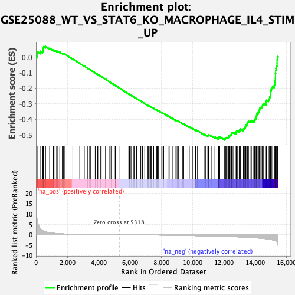
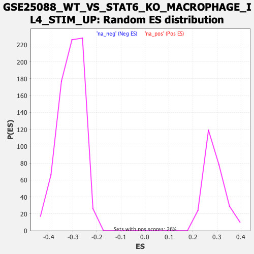

| | | Dataset | DE_genes |
| Phenotype | NoPhenotypeAvailable |
| Upregulated in class | na_neg |
| GeneSet | GSE25088_WT_VS_STAT6_KO_MACROPHAGE_IL4_STIM_UP |
| Enrichment Score (ES) | -0.53218913 |
| Normalized Enrichment Score (NES) | -1.7220389 |
| Nominal p-value | 0.0 |
| FDR q-value | 0.0011206028 |
| FWER p-Value | 0.023 |
Table: GSEA Results Summary

Fig 1: Enrichment plot: GSE25088_WT_VS_STAT6_KO_MACROPHAGE_IL4_STIM_UP
Profile of the Running ES Score & Positions of GeneSet Members on the Rank Ordered List
| PROBE | GENE SYMBOL | GENE_TITLE | RANK IN GENE LIST | RANK METRIC SCORE | RUNNING ES | CORE ENRICHMENT | | 1 | CHI3L2 | | | 74 | 7.299 | 0.0359 | No |
| 2 | ALPK1 | | | 302 | 2.809 | 0.0368 | No |
| 3 | DBF4B | | | 430 | 2.007 | 0.0396 | No |
| 4 | CD4 | | | 455 | 1.918 | 0.0488 | No |
| 5 | PTPRC | | | 469 | 1.858 | 0.0583 | No |
| 6 | EVI2A | | | 496 | 1.778 | 0.0665 | No |
| 7 | BCL6 | | | 612 | 1.442 | 0.0671 | No |
| 8 | POGLUT1 | | | 872 | 1.005 | 0.0557 | No |
| 9 | SMPD3 | | | 1112 | 0.747 | 0.0443 | No |
| 10 | GDI1 | | | 1220 | 0.663 | 0.0410 | No |
| 11 | CD52 | | | 1318 | 0.605 | 0.0380 | No |
| 12 | NUDT13 | | | 1393 | 0.568 | 0.0363 | No |
| 13 | DCLRE1C | | | 1518 | 0.511 | 0.0311 | No |
| 14 | SLAMF1 | | | 1687 | 0.438 | 0.0225 | No |
| 15 | IL23A | | | 1699 | 0.433 | 0.0242 | No |
| 16 | MR1 | | | 1747 | 0.408 | 0.0234 | No |
| 17 | ABCA7 | | | 1846 | 0.372 | 0.0191 | No |
| 18 | MSL3 | | | 2353 | 0.231 | -0.0127 | No |
| 19 | PHF1 | | | 2795 | 0.162 | -0.0406 | No |
| 20 | SKAP1 | | | 3087 | 0.132 | -0.0589 | No |
| 21 | ELOVL4 | | | 3310 | 0.114 | -0.0728 | No |
| 22 | GLA | | | 3429 | 0.105 | -0.0799 | No |
| 23 | PTPN4 | | | 3496 | 0.099 | -0.0837 | No |
| 24 | IL32 | | | 3784 | 0.082 | -0.1020 | No |
| 25 | CAMK1D | | | 3816 | 0.081 | -0.1036 | No |
| 26 | S100A10 | | | 3940 | 0.073 | -0.1112 | No |
| 27 | RAB2A | | | 4001 | 0.069 | -0.1147 | No |
| 28 | ABCG4 | | | 4135 | 0.062 | -0.1231 | No |
| 29 | GTSE1 | | | 4169 | 0.060 | -0.1249 | No |
| 30 | NCOA1 | | | 4440 | 0.045 | -0.1423 | No |
| 31 | CCDC103 | | | 4672 | 0.033 | -0.1572 | No |
| 32 | STAG3 | | | 4795 | 0.026 | -0.1651 | No |
| 33 | B4GALT1 | | | 5058 | 0.012 | -0.1821 | No |
| 34 | CYP46A1 | | | 5080 | 0.012 | -0.1834 | No |
| 35 | PTGDR2 | | | 5084 | 0.011 | -0.1836 | No |
| 36 | ZNF611 | | | 5095 | 0.011 | -0.1842 | No |
| 37 | CREBBP | | | 5099 | 0.011 | -0.1843 | No |
| 38 | UGGT1 | | | 5303 | 0.001 | -0.1976 | No |
| 39 | CD247 | | | 5927 | -0.034 | -0.2381 | No |
| 40 | CD1C | | | 5972 | -0.037 | -0.2408 | No |
| 41 | RBM38 | | | 5995 | -0.039 | -0.2420 | No |
| 42 | SETD1B | | | 6019 | -0.040 | -0.2433 | No |
| 43 | TCF20 | | | 6072 | -0.044 | -0.2464 | No |
| 44 | ISG20 | | | 6203 | -0.053 | -0.2546 | No |
| 45 | SLA | | | 6253 | -0.056 | -0.2575 | No |
| 46 | IPP | | | 6285 | -0.058 | -0.2592 | No |
| 47 | RNF19A | | | 6312 | -0.060 | -0.2606 | No |
| 48 | DGKA | | | 6429 | -0.067 | -0.2678 | No |
| 49 | PLAG1 | | | 6445 | -0.069 | -0.2684 | No |
| 50 | VIPR2 | | | 6663 | -0.086 | -0.2821 | No |
| 51 | KLC2 | | | 6695 | -0.088 | -0.2837 | No |
| 52 | TTLL3 | | | 6801 | -0.095 | -0.2900 | No |
| 53 | ALDH8A1 | | | 6946 | -0.107 | -0.2988 | No |
| 54 | FAT1 | | | 7135 | -0.121 | -0.3104 | No |
| 55 | TM7SF2 | | | 7185 | -0.126 | -0.3129 | No |
| 56 | SPAG9 | | | 7232 | -0.129 | -0.3152 | No |
| 57 | DBT | | | 7305 | -0.136 | -0.3192 | No |
| 58 | PCSK5 | | | 7339 | -0.140 | -0.3206 | No |
| 59 | POLG2 | | | 7356 | -0.141 | -0.3208 | No |
| 60 | PRR11 | | | 7389 | -0.143 | -0.3221 | No |
| 61 | SATB1 | | | 7519 | -0.153 | -0.3297 | No |
| 62 | PTPN7 | | | 7686 | -0.169 | -0.3396 | No |
| 63 | SPOCK2 | | | 7699 | -0.171 | -0.3394 | No |
| 64 | IQCC | | | 7747 | -0.174 | -0.3415 | No |
| 65 | SIT1 | | | 7787 | -0.178 | -0.3431 | No |
| 66 | CSNK1G1 | | | 7829 | -0.182 | -0.3448 | No |
| 67 | ATP8B1 | | | 8031 | -0.202 | -0.3568 | No |
| 68 | STK32B | | | 8114 | -0.210 | -0.3610 | No |
| 69 | NFATC2IP | | | 8158 | -0.214 | -0.3626 | No |
| 70 | FAM53C | | | 8432 | -0.244 | -0.3791 | No |
| 71 | CHMP7 | | | 8511 | -0.252 | -0.3828 | No |
| 72 | EZH1 | | | 8707 | -0.275 | -0.3940 | No |
| 73 | EPHB6 | | | 8937 | -0.302 | -0.4073 | No |
| 74 | EXT1 | | | 8965 | -0.305 | -0.4073 | No |
| 75 | QRICH1 | | | 9043 | -0.316 | -0.4106 | No |
| 76 | HCFC2 | | | 9095 | -0.322 | -0.4121 | No |
| 77 | ZNF721 | | | 9375 | -0.355 | -0.4284 | No |
| 78 | MAU2 | | | 9438 | -0.365 | -0.4304 | No |
| 79 | RORC | | | 9704 | -0.405 | -0.4455 | No |
| 80 | POR | | | 9795 | -0.417 | -0.4490 | No |
| 81 | FBLN2 | | | 9994 | -0.445 | -0.4595 | No |
| 82 | CUL2 | | | 10192 | -0.476 | -0.4697 | No |
| 83 | GSDMB | | | 10202 | -0.477 | -0.4677 | No |
| 84 | LMF1 | | | 10318 | -0.493 | -0.4724 | No |
| 85 | CD8B | | | 10740 | -0.559 | -0.4968 | No |
| 86 | ZNF14 | | | 10845 | -0.575 | -0.5004 | No |
| 87 | CEP85 | | | 10979 | -0.594 | -0.5058 | No |
| 88 | SLC27A3 | | | 10982 | -0.594 | -0.5026 | No |
| 89 | RHOT2 | | | 11015 | -0.600 | -0.5014 | No |
| 90 | SRF | | | 11024 | -0.602 | -0.4985 | No |
| 91 | REEP4 | | | 11194 | -0.635 | -0.5060 | No |
| 92 | CNPY4 | | | 11429 | -0.684 | -0.5175 | No |
| 93 | AKAP8L | | | 11439 | -0.685 | -0.5143 | No |
| 94 | HAUS2 | | | 11661 | -0.735 | -0.5246 | No |
| 95 | SIRT7 | | | 11666 | -0.735 | -0.5208 | No |
| 96 | LRMP | | | 11668 | -0.736 | -0.5167 | No |
| 97 | THAP3 | | | 11674 | -0.737 | -0.5130 | No |
| 98 | TOM1 | | | 11739 | -0.749 | -0.5130 | No |
| 99 | KDM2A | | | 12034 | -0.812 | -0.5277 | Yes |
| 100 | TCF7 | | | 12085 | -0.824 | -0.5263 | Yes |
| 101 | GMEB2 | | | 12091 | -0.826 | -0.5220 | Yes |
| 102 | HSD17B7 | | | 12108 | -0.832 | -0.5184 | Yes |
| 103 | ZNF335 | | | 12162 | -0.844 | -0.5172 | Yes |
| 104 | FASTKD5 | | | 12256 | -0.866 | -0.5184 | Yes |
| 105 | TAOK1 | | | 12278 | -0.872 | -0.5149 | Yes |
| 106 | AQP3 | | | 12310 | -0.879 | -0.5121 | Yes |
| 107 | EPHX2 | | | 12337 | -0.887 | -0.5088 | Yes |
| 108 | NEIL1 | | | 12347 | -0.889 | -0.5044 | Yes |
| 109 | ABCC10 | | | 12386 | -0.899 | -0.5019 | Yes |
| 110 | POM121 | | | 12442 | -0.914 | -0.5004 | Yes |
| 111 | AMDHD2 | | | 12489 | -0.925 | -0.4982 | Yes |
| 112 | SPATA2L | | | 12495 | -0.926 | -0.4934 | Yes |
| 113 | OGG1 | | | 12507 | -0.930 | -0.4889 | Yes |
| 114 | MTG1 | | | 12524 | -0.934 | -0.4848 | Yes |
| 115 | GTF2H3 | | | 12588 | -0.950 | -0.4836 | Yes |
| 116 | AKAP10 | | | 12736 | -0.993 | -0.4876 | Yes |
| 117 | AEBP1 | | | 12795 | -1.011 | -0.4858 | Yes |
| 118 | CAPN10 | | | 12802 | -1.012 | -0.4805 | Yes |
| 119 | ZNF587 | | | 12812 | -1.015 | -0.4755 | Yes |
| 120 | HAGH | | | 12859 | -1.031 | -0.4727 | Yes |
| 121 | MPPE1 | | | 12982 | -1.070 | -0.4747 | Yes |
| 122 | RGL2 | | | 13032 | -1.086 | -0.4719 | Yes |
| 123 | XYLT2 | | | 13033 | -1.086 | -0.4658 | Yes |
| 124 | PLEKHA5 | | | 13067 | -1.096 | -0.4618 | Yes |
| 125 | QSER1 | | | 13255 | -1.156 | -0.4676 | Yes |
| 126 | PDE4C | | | 13257 | -1.157 | -0.4612 | Yes |
| 127 | SLC35E1 | | | 13302 | -1.175 | -0.4575 | Yes |
| 128 | AP5Z1 | | | 13341 | -1.188 | -0.4534 | Yes |
| 129 | OSBPL2 | | | 13369 | -1.203 | -0.4484 | Yes |
| 130 | DUSP8 | | | 13399 | -1.214 | -0.4436 | Yes |
| 131 | ARNTL | | | 13401 | -1.214 | -0.4368 | Yes |
| 132 | PLA2G15 | | | 13457 | -1.236 | -0.4335 | Yes |
| 133 | ZNF839 | | | 13490 | -1.249 | -0.4287 | Yes |
| 134 | CCZ1B | | | 13521 | -1.262 | -0.4236 | Yes |
| 135 | NSMF | | | 13538 | -1.269 | -0.4175 | Yes |
| 136 | HIVEP2 | | | 13576 | -1.283 | -0.4128 | Yes |
| 137 | UBQLN4 | | | 13673 | -1.319 | -0.4117 | Yes |
| 138 | PLXDC1 | | | 13760 | -1.362 | -0.4097 | Yes |
| 139 | PARD3 | | | 13869 | -1.408 | -0.4089 | Yes |
| 140 | INTS1 | | | 13961 | -1.451 | -0.4068 | Yes |
| 141 | WRAP73 | | | 13974 | -1.457 | -0.3994 | Yes |
| 142 | DCUN1D2 | | | 14026 | -1.484 | -0.3945 | Yes |
| 143 | KLHDC4 | | | 14081 | -1.523 | -0.3895 | Yes |
| 144 | ARHGEF1 | | | 14085 | -1.526 | -0.3812 | Yes |
| 145 | KDM4C | | | 14093 | -1.531 | -0.3731 | Yes |
| 146 | SLC26A6 | | | 14099 | -1.533 | -0.3649 | Yes |
| 147 | SLC12A7 | | | 14178 | -1.590 | -0.3611 | Yes |
| 148 | ECE1 | | | 14188 | -1.594 | -0.3528 | Yes |
| 149 | TMC6 | | | 14240 | -1.624 | -0.3471 | Yes |
| 150 | KLHL24 | | | 14270 | -1.648 | -0.3398 | Yes |
| 151 | TRIB3 | | | 14295 | -1.657 | -0.3321 | Yes |
| 152 | E4F1 | | | 14318 | -1.671 | -0.3242 | Yes |
| 153 | RABL6 | | | 14394 | -1.713 | -0.3195 | Yes |
| 154 | MAP2K7 | | | 14460 | -1.760 | -0.3139 | Yes |
| 155 | RGCC | | | 14479 | -1.771 | -0.3052 | Yes |
| 156 | CD8A | | | 14518 | -1.804 | -0.2977 | Yes |
| 157 | VOPP1 | | | 14704 | -1.977 | -0.2987 | Yes |
| 158 | CLCN7 | | | 14715 | -1.988 | -0.2883 | Yes |
| 159 | CYB5R1 | | | 14729 | -1.997 | -0.2780 | Yes |
| 160 | KRI1 | | | 14850 | -2.106 | -0.2741 | Yes |
| 161 | PTPRK | | | 14918 | -2.187 | -0.2662 | Yes |
| 162 | HDAC7 | | | 14929 | -2.199 | -0.2546 | Yes |
| 163 | ANKZF1 | | | 14977 | -2.277 | -0.2450 | Yes |
| 164 | BRD9 | | | 14989 | -2.288 | -0.2329 | Yes |
| 165 | TAZ | | | 14997 | -2.296 | -0.2206 | Yes |
| 166 | AEN | | | 15017 | -2.329 | -0.2088 | Yes |
| 167 | KIF3B | | | 15045 | -2.375 | -0.1973 | Yes |
| 168 | ZNF160 | | | 15119 | -2.494 | -0.1882 | Yes |
| 169 | PGF | | | 15225 | -2.723 | -0.1798 | Yes |
| 170 | SKIV2L | | | 15261 | -2.821 | -0.1664 | Yes |
| 171 | MICAL1 | | | 15270 | -2.850 | -0.1510 | Yes |
| 172 | ENTPD6 | | | 15288 | -2.884 | -0.1360 | Yes |
| 173 | PPP6R2 | | | 15299 | -2.935 | -0.1203 | Yes |
| 174 | SPSB3 | | | 15300 | -2.935 | -0.1039 | Yes |
| 175 | FAM160B2 | | | 15311 | -2.986 | -0.0878 | Yes |
| 176 | DAPK3 | | | 15325 | -3.057 | -0.0716 | Yes |
| 177 | RXRB | | | 15365 | -3.320 | -0.0556 | Yes |
| 178 | PIK3IP1 | | | 15398 | -3.562 | -0.0379 | Yes |
| 179 | KANK2 | | | 15401 | -3.595 | -0.0179 | Yes |
| 180 | ITPR3 | | | 15436 | -4.017 | 0.0023 | Yes |
Table: GSEA details [plain text format]

Fig 2: GSE25088_WT_VS_STAT6_KO_MACROPHAGE_IL4_STIM_UP: Random ES distribution
Gene set null distribution of ES for GSE25088_WT_VS_STAT6_KO_MACROPHAGE_IL4_STIM_UP